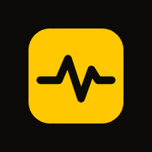

Install once from this page. After that RestoPulse opens and bills with WiFi and mobile data switched off. Menu, orders, sales reports, kitchen and waiters all work on the tablet or phone itself.
All data (menu, orders, sales, staff and settings) is saved only inside this tablet or phone. It is never sent to Power Pulse or to any server, so Power Pulse has no copy and cannot recover it.
The shopkeeper alone is responsible for this data, including taking regular backups. If the app or Chrome's data is cleared, or the device is reset, lost or damaged, the data is gone unless you have a backup file.
تمام ڈیٹا صرف اسی ٹیبلٹ یا فون میں محفوظ ہوتا ہے۔ اس ڈیٹا کی مکمل ذمہ داری صرف دکاندار کی ہے، پاور پلس کی نہیں۔ ہر ہفتے بیک اپ فائل ضرور ڈاؤن لوڈ کریں۔
| Tablet (this page) | Offline PC version | Cloud version | |
|---|---|---|---|
| Runs on | One Android tablet or phone | Windows counter PC + phones on shop WiFi | Any device, anywhere |
| Internet | Only to install | Not needed | Always needed |
| Data kept | On this device only | On the counter PC only | Secure cloud |
| Several devices together | No | Yes (shop WiFi) | Yes |
License, help or the cloud version: WhatsApp 0310-0007049 · Power Pulse, Lahore. Needs Android 8 or newer with an up-to-date Google Chrome.